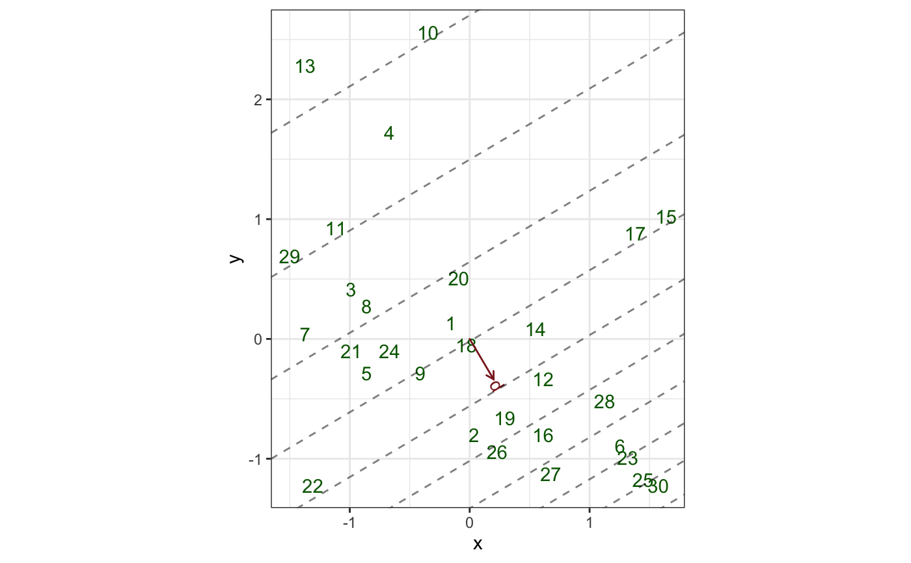
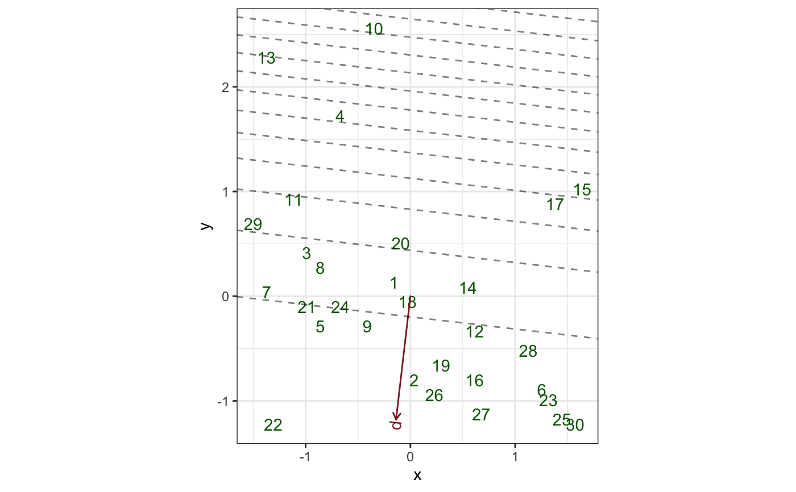

Render isolines for a subject or variable
geom-biplot-isolines.Rdgeom_*_isolines() renders isolines for a specified subject or
variable.
geom_u_ticks(mapping = NULL, data = NULL, stat = "identity", position = "identity", family = NULL, ids = 1L, by = 1, ticks.length = 0.05, ..., na.rm = FALSE, show.legend = NA, inherit.aes = TRUE) geom_v_ticks(mapping = NULL, data = NULL, stat = "identity", position = "identity", family = NULL, ids = 1L, by = 1, ticks.length = 0.05, ..., na.rm = FALSE, show.legend = NA, inherit.aes = TRUE) geom_biplot_ticks(mapping = NULL, data = NULL, stat = "identity", position = "identity", .matrix = "v", family = NULL, ids = 1L, by = 1, ticks.length = 0.05, ..., na.rm = FALSE, show.legend = NA, inherit.aes = TRUE) geom_u_isolines(mapping = NULL, data = NULL, stat = "identity", position = "identity", family = NULL, ids = 1L, by = 1, ..., na.rm = FALSE, show.legend = NA, inherit.aes = TRUE) geom_v_isolines(mapping = NULL, data = NULL, stat = "identity", position = "identity", family = NULL, ids = 1L, by = 1, ..., na.rm = FALSE, show.legend = NA, inherit.aes = TRUE) geom_biplot_isolines(mapping = NULL, data = NULL, stat = "identity", position = "identity", .matrix = "v", family = NULL, ids = 1L, by = 1, ..., na.rm = FALSE, show.legend = NA, inherit.aes = TRUE)
Arguments
| mapping | Set of aesthetic mappings created by |
|---|---|
| data | The data to be displayed in this layer. There are three options: If A A |
| stat | The statistical transformation to use on the data for this layer, as a string. |
| position | Position adjustment, either as a string, or the result of a call to a position adjustment function. |
| family | A family function or a character string naming one, to transform the values along the axis at which to render isolines or tick marks. |
| ids | Row indices of the subjects or variables for which isolines or tick marks will be rendered. |
| by | Interval length between isolines or tick marks, in the units of the ordination. |
| ticks.length | Numeric; the length of the tick marks, as a proportion of the plot width. |
| ... | Additional arguments passed to |
| na.rm | Passed to |
| show.legend | logical. Should this layer be included in the legends?
|
| inherit.aes | If |
| .matrix | A character string matching one of several indicators for one
or both matrices in a matrix decomposition used for ordination. The
standard values are |
Format
An object of class GeomTicks (inherits from GeomSegment, Geom, ggproto, gg) of length 4.
Biplot layers
ggbiplot() uses ggplot2::fortify() internally to produce a single data
frame with a .matrix column distinguishing the subjects ("u") and
variables ("v"). The stat layers stat_u() and stat_v() simply filter
the data frame to one of these two.
The geom layers geom_u_*() and geom_v_*() call the corresponding stat in
order to render plot elements for the corresponding matrix \(U\) or
\(V\). geom_biplot_*() selects a default matrix based on common practice,
e.g. \(U\) for points and \(V\) for arrows.
Aesthetics
geom_*_isolines() and geom_*_ticks() understand the following aesthetics
(required aesthetics are in bold):
xyalphacolourlinetypesizegroup
Examples
# Regression analysis of Motor Trend design and performance data mtcars %>% scale(scale = FALSE) %>% as.data.frame() %>% lm(formula = mpg ~ wt + cyl) %>% as_tbl_ord() %>% augment() %>% mutate_u(influence = .wt.res^2) %>% print() -> mtcars_lm#> # A tbl_ord of class 'lm': (32 x 3) x (1 x 3)' #> # 3 coordinates: (Intercept), wt, cyl #> # #> # U: [ 32 x 3 | 8 ] #> `(Intercept)` wt cyl | .name .hat .sigma .cooksd #> | <chr> <dbl> <dbl> <dbl> #> 1 1 -0.597 -0.188 | 1 Mazd… 0.0548 2.60 5.08e-3 #> 2 1 -0.342 -0.188 | 2 Mazd… 0.0376 2.61 4.44e-4 #> 3 1 -0.897 -2.19 | 3 Dats… 0.0798 2.52 5.68e-2 #> 4 1 -0.00225 -0.188 | 4 Horn… 0.0321 2.61 1.80e-3 #> 5 1 0.223 1.81 | 5 Horn… 0.0912 2.58 2.35e-2 #> # … with 27 more rows, and 4 more #> # variables: .wt.res <dbl>, #> # .fit <dbl>, .se.fit <dbl>, #> # influence <dbl> #> # #> # V: [ 1 x 3 | 1 ] #> `(Intercept)` wt cyl | .name #> | <chr> #> 1 6.72e-16 -3.19 -1.51 | 1 mpgmtcars_lm %>% ggbiplot(aes(x = wt, y = cyl)) + geom_u_point(aes(color = influence)) + geom_v_vector() + # weight isolines geom_v_isolines(ids = 1, by = 5) + ggtitle( "Weight isolines with data colored by importance", "Regressing mpg onto weight and number of cylinders" )# Linear regression on marine ecosystem data # Adapt Exhibit 2.3 in Greenacre (2010) bioenv %>% transform( x = as.vector(scale(Depth)), y = as.vector(scale(Pollution)) ) %>% lm(formula = d ~ x + y) %>% as_tbl_ord() %>% augment() %>% print() -> bioenv_lm#> # A tbl_ord of class 'lm': (30 x 3) x (1 x 3)' #> # 3 coordinates: (Intercept), x, y #> # #> # U: [ 30 x 3 | 7 ] #> `(Intercept)` x y | .name .hat .sigma .cooksd #> | <chr> <dbl> <dbl> <dbl> #> 1 1 -0.156 0.132 | 1 1 0.0344 5.20 6.85e-3 #> 2 1 0.0363 -0.802 | 2 2 0.0587 5.24 4.64e-3 #> 3 1 -0.988 0.413 | 3 3 0.0670 5.26 3.62e-4 #> 4 1 -0.668 1.72 | 4 4 0.135 5.25 3.50e-3 #> 5 1 -0.860 -0.288 | 5 5 0.0750 5.26 6.07e-5 #> # … with 25 more rows, and 3 more #> # variables: .wt.res <dbl>, #> # .fit <dbl>, .se.fit <dbl> #> # #> # V: [ 1 x 3 | 1 ] #> `(Intercept)` x y | .name #> | <chr> #> 1 10.9 2.31 -2.97 | 1 dbioenv_lm %>% ggbiplot(aes(x = x, y = y, color = .fit, alpha = .wt.res ^ 2)) + theme_bw() + scale_color_distiller(type = "div", palette = 1) + scale_alpha_continuous(range = c(1/3, 1)) + geom_u_point() + geom_v_vector() + geom_v_isolines(ids = 1, by = 5) + labs(x = "Standardized Depth", y = "Standardized Pollution") + ggtitle( "Gradient vector and contour lines for species 'd'", "Regression plane: standardized depth-pollution space" )# Generalized linear regression on marine ecosystem data bioenv %>% transform( x = as.vector(scale(Depth)), y = as.vector(scale(Pollution)) ) %>% glm(formula = d ~ x + y, family = "poisson") %>% as_tbl_ord() %>% print() -> bioenv_pois#> # A tbl_ord of class 'glm': (30 x 3) x (1 x 3)' #> # 3 coordinates: (Intercept), x, y #> # #> # U: [ 30 x 3 | 0 ] #> `(Intercept)` x y | #> | #> 1 1 -0.156 0.132 | #> 2 1 0.0363 -0.802 | #> 3 1 -0.988 0.413 | #> 4 1 -0.668 1.72 | #> 5 1 -0.860 -0.288 | #> #> # #> # V: [ 1 x 3 | 0 ] #> `(Intercept)` x y | #> | #> 1 2.30 0.200 -0.337 |bioenv_pois %>% ggbiplot(aes(x = x, y = y, intercept = `(Intercept)`, label = .name)) + theme_bw() + geom_u_text(color = "darkgreen") + geom_v_vector(color = "brown4") + geom_v_text_radiate(color = "brown4") + geom_v_isolines(family = poisson(), by = 2)# Adapt (3.4) and Exhibit 3.6 in Greenacre (2010) bioenv %>% dplyr::mutate_at(dplyr::vars(a:e), as.logical) %>% transform( x = as.vector(scale(Depth)), y = as.vector(scale(Pollution)) ) %>% glm(formula = d ~ x + y, family = "binomial") %>% as_tbl_ord() %>% print() -> bioenv_bin#> # A tbl_ord of class 'glm': (30 x 3) x (1 x 3)' #> # 3 coordinates: (Intercept), x, y #> # #> # U: [ 30 x 3 | 0 ] #> `(Intercept)` x y | #> | #> 1 1 -0.156 0.132 | #> 2 1 0.0363 -0.802 | #> 3 1 -0.988 0.413 | #> 4 1 -0.668 1.72 | #> 5 1 -0.860 -0.288 | #> #> # #> # V: [ 1 x 3 | 0 ] #> `(Intercept)` x y | #> | #> 1 2.71 -0.137 -1.18 |bioenv_bin %>% ggbiplot(aes(x = x, y = y, intercept = `(Intercept)`, label = .name)) + theme_bw() + geom_u_text(color = "darkgreen") + geom_v_vector(color = "brown4") + geom_v_text_radiate(color = "brown4") + geom_v_isolines(family = binomial(), by = .05)